India is known for its diverse and rich tradition of handwoven sarees, and Pattu sareeswhich are typically made of silk stand out for their luxury, elegance, and cultural significance. Below are the Top 10 Pattu Sarees in India, each representing different regions and weaving styles making them iconic in the world of Indian textiles.
1. Kanjivaram Pattu Saree
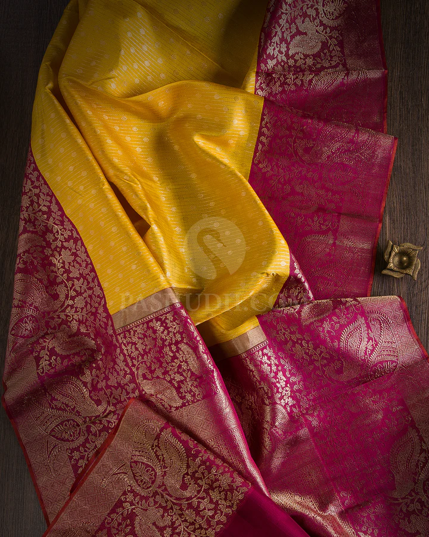 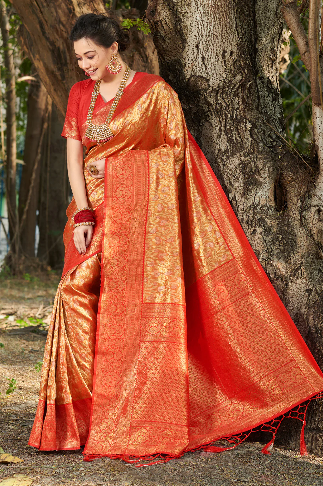 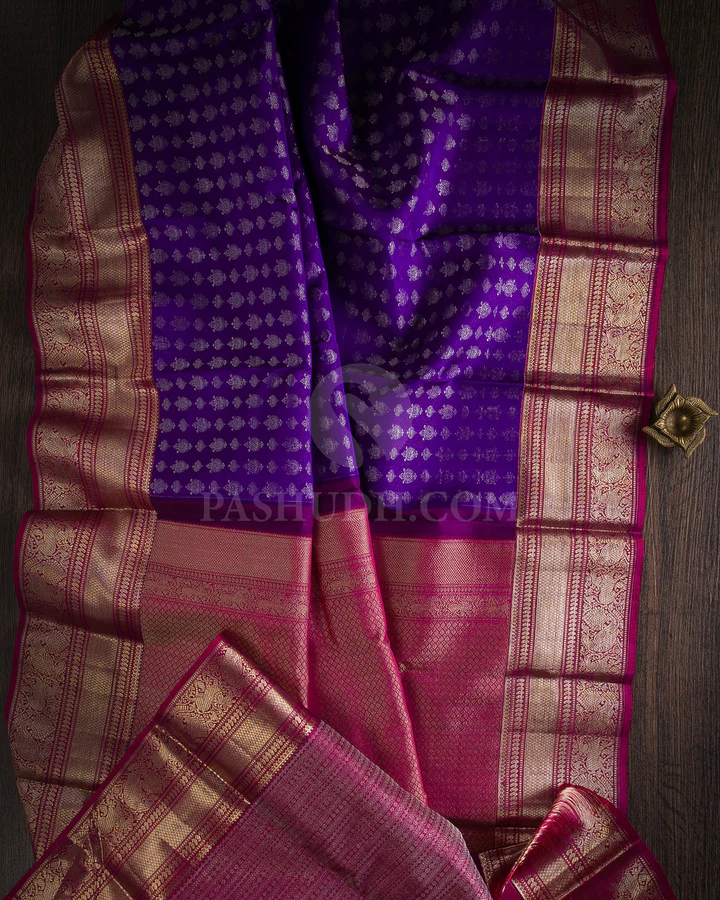
Origin: Tamil Nadu
Description: Kanjivaram sarees are the most renowned Pattu sarees, known for their intricate weaving and heavy zari work. They are traditionally made of pure mulberry silk and are characterized by rich colors, heavy gold or silver borders, and traditional motifs like peacocks, elephants, and temples.
Description: Banarasi sarees are renowned for their brocade work, and when woven with silk (often with gold or silver zari), they become luxurious and rich. Paired with floral, paisley, or Mughal-inspired motifs, these sarees represent the grandeur of ancient weaving traditions.
Key Features: Intricate zari work, brocade patterns, floral and geometric motifs, and smooth texture.
Occasions: Weddings, religious ceremonies, and festivals.
Description: Mysore silk sarees are known for their softness, simplicity, and elegance. These sarees are woven from high-quality silk and typically feature a plain body with a beautiful zari border. They are less heavy compared to Kanjivaram but equally luxurious.
Description: Paithani sarees are famous for their vibrant colors and intricate zari work. They are typically woven using silk and zari and are characterized by their beautiful peacock and floral motifs on the pallu and borders. Paithani sarees are traditional to Maharashtra and are often worn by brides.
Key Features: Rich zari borders, peacock motifs, vibrant colors, and fine silk texture.
Occasions: Weddings, festivals, and cultural ceremonies.
Description: Known for their ikat weaving technique, Pochampally sarees are woven with silk and feature geometric patterns in vibrant colors. They have a smooth finish and are lighter than Kanjivaram sarees but still have a luxurious appeal.
Description: Tussar silk, known for its raw, natural texture, is used to create lightweight and elegant sarees. Tussar silk Pattu sarees typically come in earthy tones and often feature simple but elegant motifs.
Key Features: Raw, rustic texture, earthy colors, lightweight feel, and simplicity in design.
Occasions: Casual wear, traditional events, and semi-formal occasions.
Description: Sambalpuri sarees are handwoven with the traditional ikat technique. The silk used in these sarees gives them a soft and smooth texture. Sambalpuri sarees feature traditional designs inspired by nature, like flowers, animals, and geometric patterns.
Key Features: Ikat weaving, vibrant colors, and nature-inspired motifs.
Occasions: Weddings, festivals, and cultural events.
Description: Chanderi silk sarees are known for their lightweight texture and soft feel. They are woven with silk and zari, and they often come in pastel or subtle hues. Chanderi sarees are famous for their fine weave and smooth finish.
Description: Kota Doria sarees, though lighter than other Pattu sarees, are renowned for their sheer texture and checkered patterns. When made with silk, they exude an understated yet sophisticated elegance.
Key Features: Checkered patterns, sheer fabric, and fine silk texture.
Occasions: Traditional events, casual to semi-formal functions.
Description: Uppada sarees are woven with a unique technique that makes them lightweight yet luxurious. The sarees feature delicate zari work, often with beautiful floral or geometric patterns. Uppada Pattu sarees are known for their fine texture and ease of draping.
Key Features: Lightweight, fine zari work, intricate designs, and smooth texture.
Occasions: Weddings, festivals, and grand celebrations.


 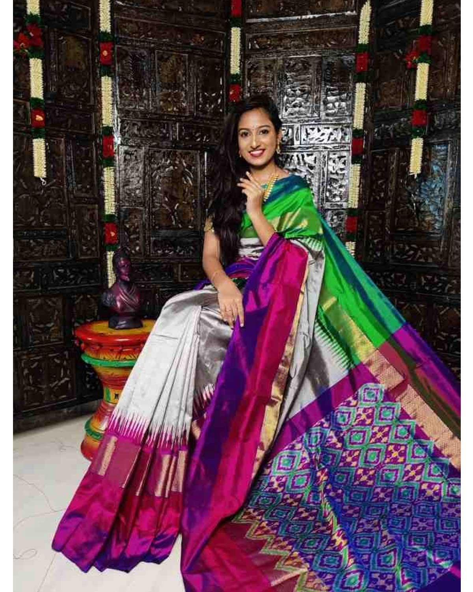
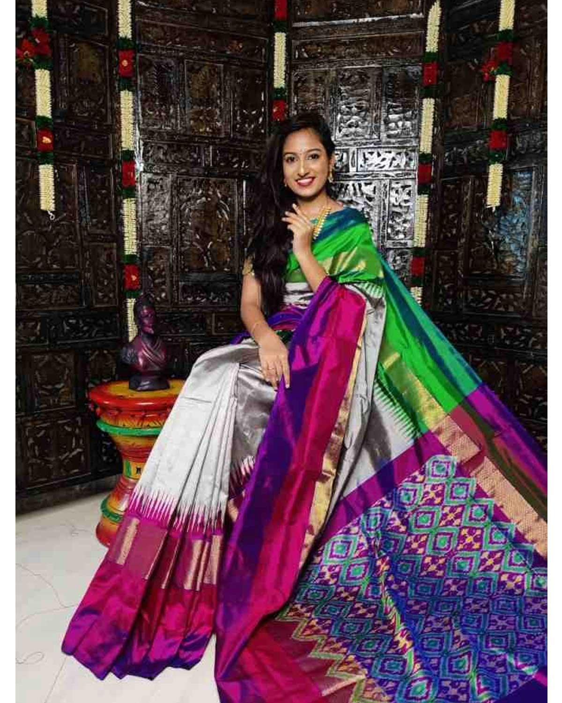 
 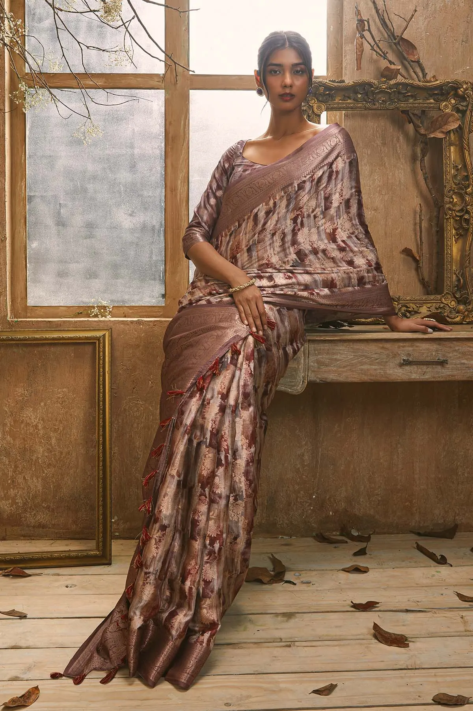
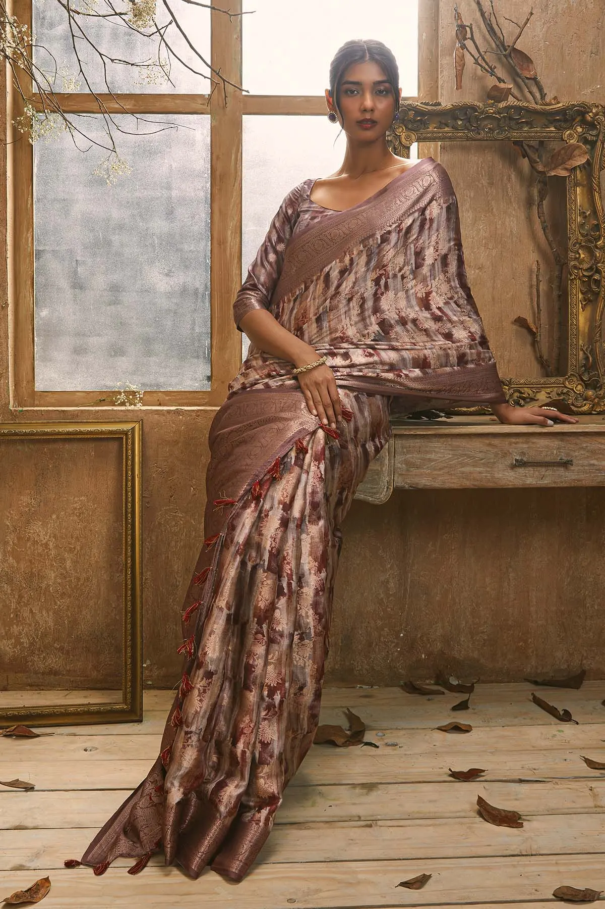 
 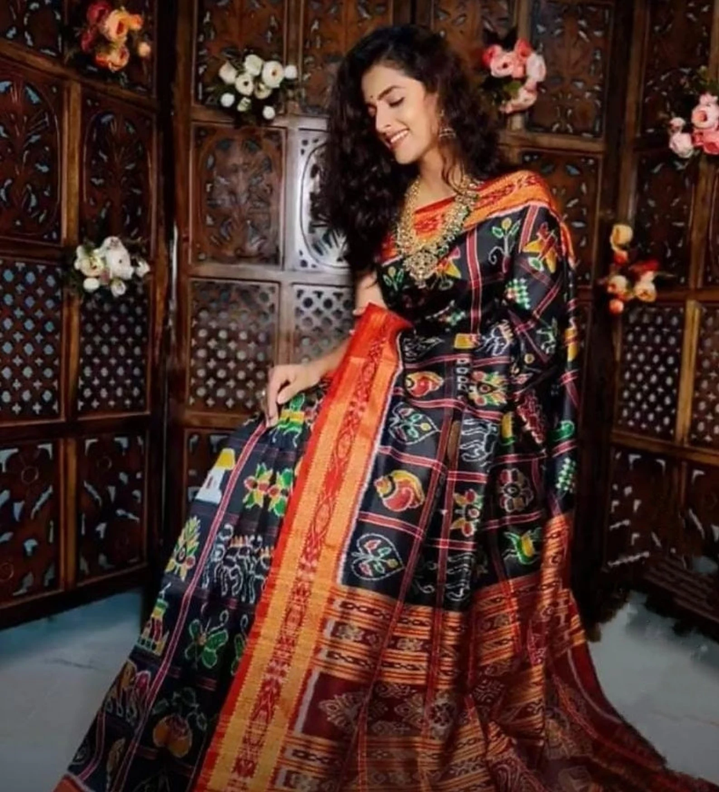
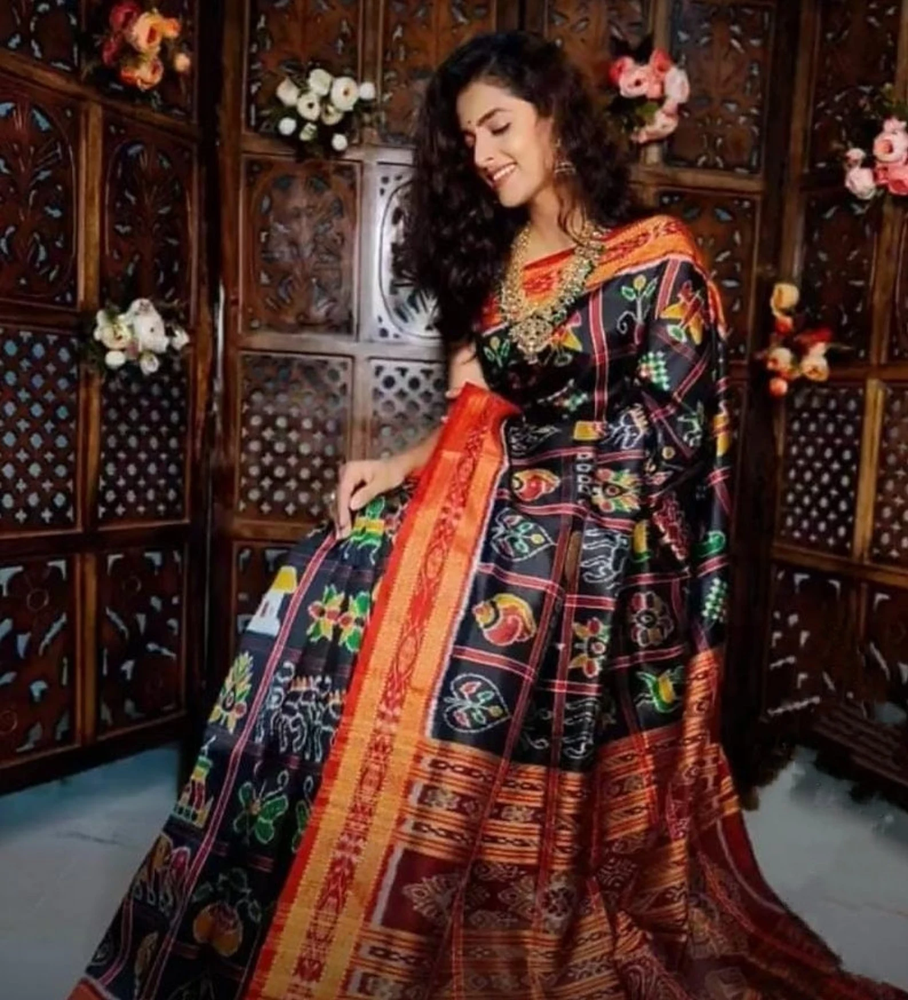 
 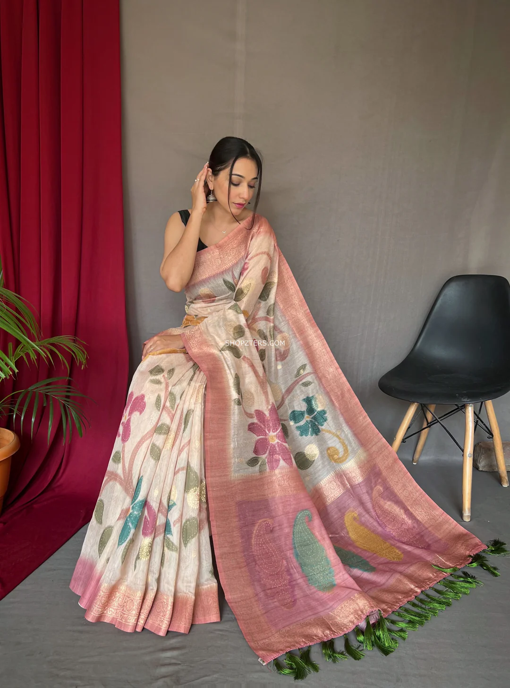
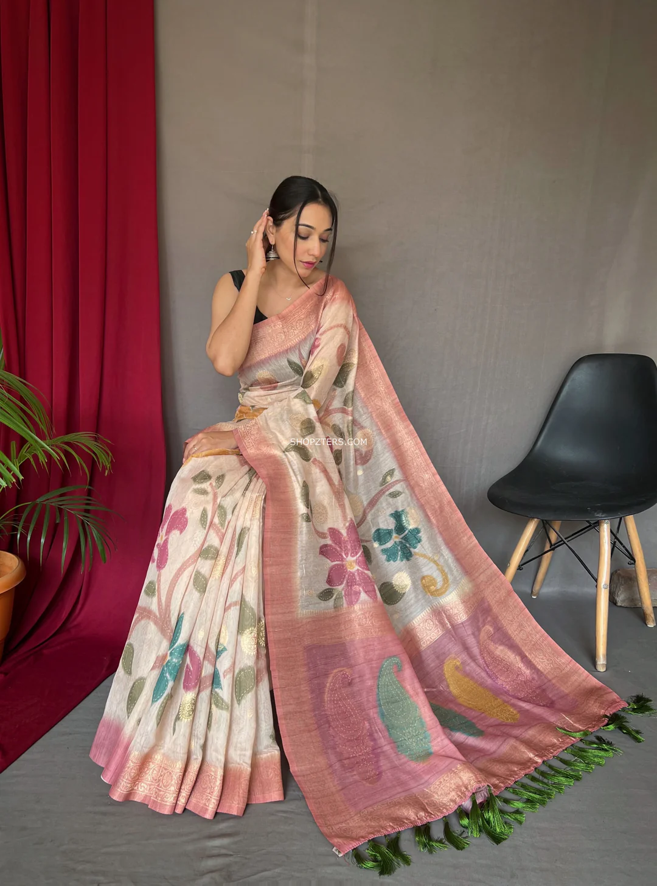 
 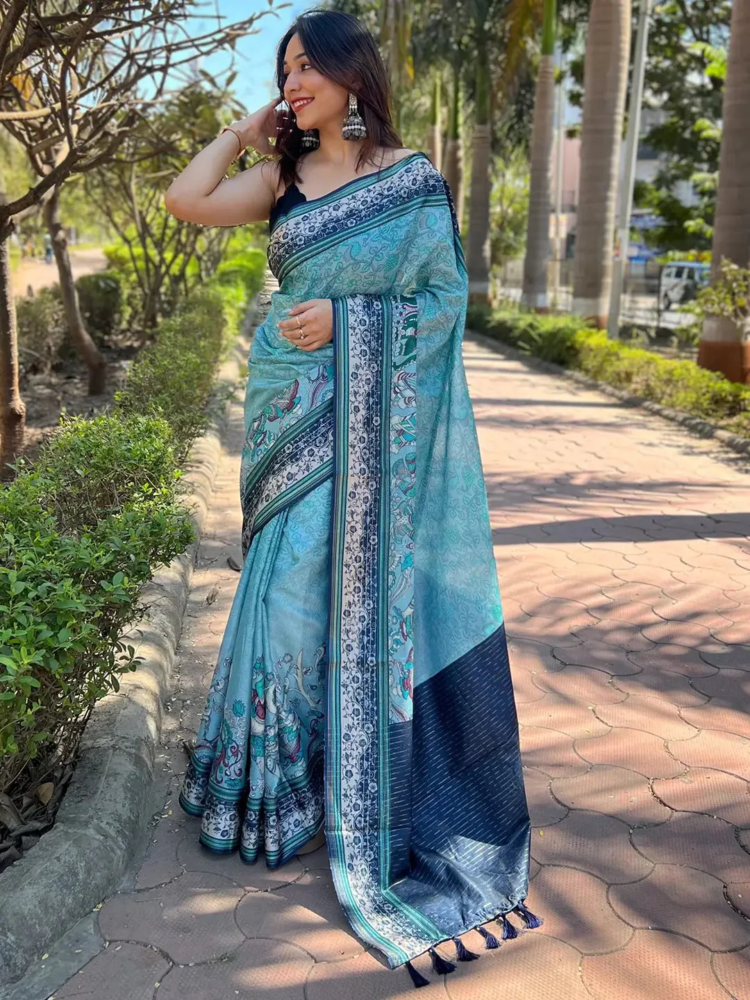
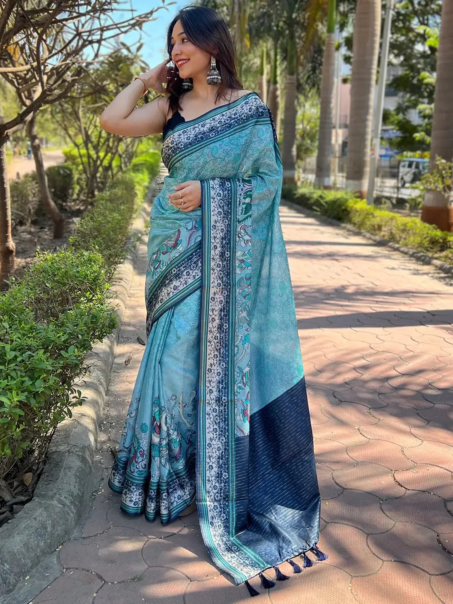